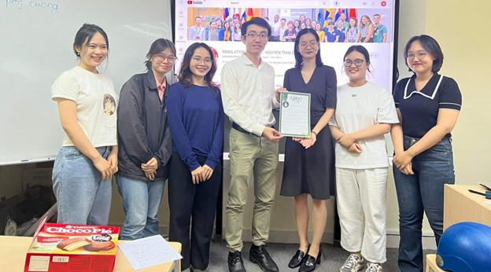

Thân gửi Thầy Nguyễn Thái Cường,
Chân thành cảm ơn Thầy vì những bài học đầy tâm huyết mà Thầy đã luôn nhiệt tình đem đến cho các thế hệ sinh viên. Đối với chúng em, Thầy không chỉ là
một người thầy trên giảng đường mà còn là một tấm gương sáng để chúng em noi theo và học tập để trở thành một con người tốt hơn.
Chúng em xin gửi đến Thầy
lời tri ân, lời chúc sức khỏe. Chúc Thầy luôn luôn hạnh phúc, mọi điều như ý và đạt được nhiều thành công trên con đường sự nghiệp. Những giây phút được học tập,
được lắng nghe những lời chỉ dạy từ Thầy sẽ là những giây phút mà chúng em không bao giờ quên!
Love from Group 1 - AUF46 ❤